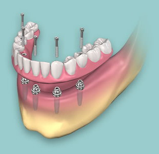

Dantų protezavimas ir dantų protezai | Prodentum
 info@prodentum.lt +370 657 77747 Lietuvių English Mokymai Moksliniai tyrimai Laboratorija Specialistai Paslaugos Dantų implantacija Implantacija su dinamine navigacija Dantų protezavimas Skaitmeninis šypsenos planavimas Ortodontija Estetinis plombavimas Dantų balinimas Profesionali burnos higiena Nusidėvėjusių dantų gydymas Tyrimai ir konsultacijos Sportinės dantų kapos Kompiuterinė tomografija Dantų implantai bedančiams pacientams Chirurgija Periodontologija Biomimetinė odontologija, minimaliai invazyvi odontologija Dantų plombavimas Endodontija Temporomandibuliniai sutrikimai Procedūros taikant bendrąją nejautrą Paslaugos pacientams iš užsienio Kita Kainos Paslaugų kainos Atsiskaitymo būdai Dovanų čekis Specialūs pasiūlymai TLK kompensavimas Galerija Pacientams Apie sveikus dantis Dantų priežiūra Protezų priežiūra Režimas po danties implantacijos operacijos Aktuali Informacija Technologijos Naujienos Apie mus Kontaktai Pagrindinis Paslaugos Dantų protezavimas ir dantų protezaiDantų protezavimas ir dantų protezai
Dantų protezavimas fiksuotais protezais
Kai kurių defektų dantų vainikų srityje dėl didelės apimties ir kitų ypatybių, negalima pašalinti plombuojant. Tokiais atvejais danties atkūrimui gali būti naudojami įklotai ir užklotai (1 pav.) bei vainikėliai (2 pav.). Dažniausiai naudojami metalo keramikos ir bemetalės keramikos konstrukcijos vainikėliai. Siekiant, kad rezultatas būtų kuo estetiškesnis, o apnašų kaupimasis sukeltų kuo mažiau rūpesčių pacientui, šiuo metu fiksuoti protezai dažniausiai gaminami cirkonio oksido pagrindu.
Dantų eilių defektus, kurie susidarė pacientui praradus vieną ar keletą dantų, galima šalinti naudojant tiltinius protezus (3 pav.). Deja, šis gydymo metodas išsiskiria dideliu trūkumu – taikant jį, tenka šlifuoti ir papildomai apkrauti gretimus dantis, taip pat sudėtingėja burnos higiena, nukenčia atraminiai dantys, prastėja jų prognozė. Dėl šių priežasčių pacientams rekomenduojama rinktis dantų implantus, ypač tais atvejais, kai gydant tiltiniais protezais būtina šlifuoti gretimus sveikus dantis.
ProDentum klinikoje dantų protezų gamyba atliekama mūsų nuosavoje skaitmeninėje laboratorijoje, todėl yra užtikrinamas operatyvus darbas ir efektyvi kokybės kontrolė. Klinikoje dirbantys specialistai bendradarbiauja su kokybiškus produktus tiekiančiomis, sertifikuotomis dantų technikos laboratorijomis ne tik Lietuvoje, bet ir užsienio šalyse. Fiksuoti dantų protezai paprastai paruošiami po 2-5 paciento vizitų. Gamyboje naudojamos pažangios skaitmeninės technologijos suteikia galimybę net ir didelės apimties dantų vainikų defektus pašalinti ir atlikti protezavimą per ypač trumpą laiką.
SVARBU! Protezuojami gali būti tik tie dantys, kurių prognozė yra gera. Vadinasi:
Protezuoti numatytoje srityje turi būti likęs pakankamas kiekis audinių, turi būti likusi galimybė pagaminti protezus (defekto riba turi būti virš dantenų). Dantų kanalų gydymas turi būti atliktas nepriekaištingai. Sritis neturėtų būti pažeista periodonto ligų.
Prieš pradedant nuolatinių protezų gamybą, gydytojas turi įsitikinti, ar protezuoti numatyti dantys yra kokybiškai tam paruošti, ir aptarti esančią situaciją su pacientu. Atlikus endodontinį (kanalų) gydymą, dantys atstatomi vienu iš galimų metodų – naudojant stiklo pluošto kaiščius ir / arba kompozitą. Atstatymas naudojant lietus kaulinius įklotus naudojamas vis rečiau.
ProDentum klinikoje teikiame įvairias dantų protezavimo paslaugas ir galime pagaminti bet kurio tipo ar konstrukcijos fiksuotus dantų protezus. Dantų protezavimo paslaugas teikia klinikoje dirbantys odontologai-ortopedai , kurie taipogi padeda pacientams išsirinkti tinkamiausią protezavimo variantą, atsižvelgę į visus pacientui aktualius veiksnius – sveikatos būklę, laiko ir finansinius aspektus.
1 pav. Danties atstatymas užklotu.
Dantų protezavimas išimamais protezais
Tais atvejais, kuomet dantų eilių defektai yra išties dideli, pacientui praradus tris ar daugiau dantų, gydymas naudojant tiltinius protezus yra labai sudėtingas, o kartais net ir neįmanomas. Tam tikros priežastys gali lemti, kad tokioje situacijoje negalima taikyti gydymo ir dantų eilių defektų šalinimo naudojant dantų implantus. Tokiu atveju, esant būtinybei atstatyti dantis, kad būtų pagerinta kramtymo funkcija, gydymas planuojamas naudojant išimamus protezus. Šie protezai gali būti keleto tipų:
daliniai išimami protezai (gydymas gali būti atliekamas, jei yra likusių dantų) (1 pav.); pilni išimami protezai (gydymas taikomas kai dantų visai nėra) (2 pav.); dengiantys išimami protezai (šio tipo protezai naudojami tuomet, kai jų bazė remiasi į po ja esantį implantą ar paliktą šaknį) (3 pav.). Šie protezai gaminami keletu skirtingų būdų: iš akrilo plastmasės arba su metaliniu karkasu (vadinamieji biugeliniai arba lanko atraminiai protezai).
Prie gretimų dantų dalinius išimamus protezus galima jungti kabliuku arba estetiškai atrodančiais užraktais (4 pav.). Pacientas turėtų žinoti, kad esama daugybės išimamų protezų modifikacijų, taip pat – kad pastarųjų efektyvumas atstatant kramtymo funkciją yra prastesnis. Išimami protezai turi būti intensyviau ir profesionaliau prižiūrimi. Paprastai šis gydymo būdas taikomas dėl to, kad reikalingos mažesnės investicijos, taip pat tais atvejais, kai dantų prognozė nėra aiški, arba kaip laikini protezai.
Priklausomai nuo klinikinės situacijos, išimami protezai gali būti gaminami iš elastingos plastmasės („Valplast“, „Bredent“ ir kt.). Klinikoje ProDentum išimamų protezų klausimais konsultuoja odontologo-ortopedo kvalifikaciją turintys gydytojai .
1 pav. Tradicinis dalinis plokštelinis protezas. Pagrindiniai trūkumai: silpnesnė fiksacija, dengia didelį plotą, mažiau patogus kramtymas bei fonetika.
2 pav. Pilnas plokštelinis protezas. Mažiausias kramtymo funkcijos atstatymas. Ypač didelis diskomfortas apatinio žandikaulio protezavimo atveju.
3 pav. Keturi implantai su užraktais, pagerinančiais išimamo protezo fiksaciją. Užraktų dėka išimamas protezas itin gerai fiksuojamas prie implantų, ženkliai pagerindamas kramtymo efektyvumą ir komfortą.
4 pav. Dalinis išimamas protezas iš PEEK plastiko, kuris užraktais tvirtinasi prie tiltinio protezo bei dantų implantų.
Dantų protezavimo kainos
Paslauga Kaina (EUR) Laikinas vainikėlis 49,00 Laikinas frezuotas vainikėlis 59,00 Laikinas vainikėlis ant implanto 139,00 Cirkonio keramikos vainikėlis 485,00 Cirkonio keramikos vainikėlis su estetine keramikos apdaila 545,00 Stiklo keramikos restauracija 419,00 Stiklo keramikos restauracija su estetine keramikos apdaila 449,00 Metalo keramikos vainikėlis 319,00 Metalo lydinio restauracija (be tauriojo metalo kainos) 269,00 Implantų fiksuoti protezai Cirkonio keramikos vainikėlis ant implanto 669,00 Cirkonio keramikos vainikėlis ant implanto su estet. apdaila 719,00 Stiklo keramikos vainikėlis ant implanto 559,00 Stiklo keramikos vainikėlis ant implanto su estet. apdaila 599,00 Metalo keramikos vainikėlis ant implanto 519,00 Individuali cirkonio oksido/titano atrama 319,00 SusisiekiteKalvarijų g. 128A-2, Vilnius
+370 657 77747
info@prodentum.lt
Išsami informacija padės kuo efektyviau suplanuoti Jūsų vizitą! Būtume dėkingi, jei registruodamiesi:
Aprašytumėte problemą, dėl kurios kreipiatės Jei žinote, nurodytumėte specialistą, į kurį norėtumėte kreiptis Jums patogius vizitų laikus Jeigu turite, pridėtumėte papildomą medžiagą (rentgeno/foto nuotraukas, išrašų kopijas ir kita) Užsisakykite naujienlaiškį ProDentum klinikaKalvarijų g. 128A-2, Vilnius
+370 657 77747
info@prodentum.lt
www.prodentum.lt
Darbo laikas: I – V nuo 8.00 iki 20.00
Mus taip pat rasite Facebook Reviews us DUK Svetainės medis Partneriai Atsisakyti prenumeratos © Prodentum.lt Solution: Svarbi informacijaInformuojame, ProDentum klinika atnaujina savo veiklą nuo Gegužės 18 d.
Vizitai bus organizuojami 10-ies žingsnių principu, visą būtiną informaciją norint apsilankyti pas odontologą galite rasti čia
Taip pat galite skambinti telefonu +370 657 77747.
Siekdami pagerinti Jūsų naršymo kokybę, statistiniais ir tiesioginės rinkodaros tikslais šioje svetainėje naudojame slapukus (angl. „cookies“), kuriuos galite bet kada atšaukti pakeisdami savo interneto naršyklės nustatymus ir ištrindami įrašytus slapukus. Jei nesutinkate, slapukų Jūsų įrenginyje netalpinsime, tačiau kai kurios svetainės funkcijos gali iš dalies ar visiškai neveikti. Plačiau
Sutinku